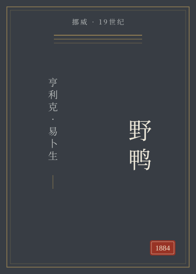
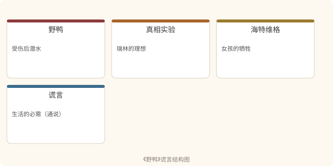

野鸭
一、基本信息
| 作者 | 易卜生 |
|---|---|
| 成书/出版 | 1884年（作者页 B044/B019 口径：野鸭（1884）） Henrik Ibsen — Encyclopaedia Britannica (by Robert M. Adams)（百科全书） |
| 国别/地区 | 挪威 |
| 时代 | 近代 · 19世纪 |
| 体裁 | 话剧 |
| 语言 | 挪威语 |

《野鸭》谎言结构图（主题·结构图）
二、创作背景
作者页（B044/B019）：易卜生 major_works 载'野鸭（1884）'（作者页定位，详见 wanou 条核对）。
题材（通说待核）：'生活的谎言'（livsløgn）——理想主义者的真相实验摧毁一个家。
三、内容脉络
瑞林的'真相'实验：海特维格的野鸭与身世——女孩之死（通说待核）。
四、主要人物表
| 人物 | 身份 | 说明 |
|---|---|---|
| 瑞林 | 理想主义者 | 真相的实验者（通说待核） |
| 海特维格 | 女孩 | 野鸭的化身（通说待核） |
五、主题与艺术特点
- '生活的谎言'与真相的暴力（通说待核）。
- 野鸭的隐喻：受伤后潜水（通说）。
- 对'真相崇拜'的反讽（通说待核）。
六、影响与评论
- 作者页：易卜生后期戏剧（B044/B019 作者页口径）。
Henrik Ibsen — Encyclopaedia Britannica (by Robert M. Adams)（百科全书） - '生活的谎言'概念为现代戏剧理论核心（通说待核）。
Henrik Ibsen — Encyclopaedia Britannica (by Robert M. Adams)（百科全书）
七、阅读建议
难点
- '谎言'概念的哲学。
- 阁楼摄影棚布景。
- 《野鸭》（人民文学出版社，通说待核）。
- 挪威文原版（公有领域）。
《群鬼》→《野鸭》：真相的两面。
八、待核实
- 1884年出版（Gyldendal说）核对。
- 瑞林/海特维格人名核对。
- '生活的谎言'（livsløgn）术语核对。
本页主要来源
- Henrik Ibsen — Encyclopaedia Britannica (by Robert M. Adams)（百科全书）
- A Doll's House (Et dukkehjem) — Encyclopaedia Britannica（百科全书）
易卜生的其他收录作品：玩偶之家